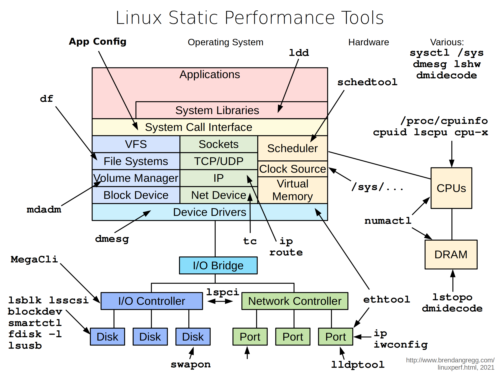

TL;DR — Observability tools watch the system under load. Static performance tools inspect the system's configuration at rest — no workload required. They answer a different, often-skipped question: is the machine even built to go fast? Wrong RAID mode, a NIC stuck at half its link speed, memory in the wrong DIMM slots, a CPU governor pinned to powersave, swap on a slow disk — none of these show up as "busy," yet each caps your performance before the first request arrives. This chapter walks Gregg's Static Performance Tools map: every config inspector, from ldd to dmidecode to lspci, by subsystem.
Why static analysis comes first
There's a whole class of performance problems you will never find by watching graphs, because the bottleneck isn't activity — it's a setting. The system is idle and still misconfigured. A 25 GbE NIC that negotiated down to 1 GbE shows perfectly healthy utilization at 1 Gbit; the graph looks fine, you're just missing 96% of the link. Static analysis is the discipline of checking the configuration before you chase load — confirming the machine can go fast before asking why it isn't.
Gregg's static map mirrors the observability map — same system stack, applications down to hardware — but every tool reads configured state rather than live counters. Run these on a fresh box, after any hardware change, and as the first step of a "this server is slower than its twin" investigation. The whole tour assumes nothing is running; that's the point.

The original — Brendan Gregg's "Linux Static Performance Tools" (brendangregg.com, 2021). The simplified diagram below walks it box by box.
Fig 1 — Same stack, static lens. Each tool reports configured state — link speed, RAID mode, NUMA layout, CPU topology — not live activity.
Applications & libraries
App config — read the actual running config
The most common static miss is the application config you think is applied versus what's actually loaded. A database with shared_buffers at the default 128 MB on a 256 GB box is crippled before any query runs. Always read the live config from the running process, not the file on disk — they drift. For PostgreSQL: SHOW all; or pg_settings; for most daemons, the config path plus a reload check.
ldd — shared library dependencies
What: lists the shared libraries a binary links against, and which file each resolves to. Performance relevance: it confirms you're loading the optimised library you expect — the AVX-512 build of a math library, the tuned malloc (jemalloc/tcmalloc) via LD_PRELOAD, the right OpenSSL. A binary silently falling back to a generic libc malloc can lose 20–30% on allocation-heavy workloads.
ldd /usr/lib/postgresql/16/bin/postgres
# confirm a preloaded allocator is actually in the map:
LD_PRELOAD=/usr/lib/x86_64-linux-gnu/libjemalloc.so.2 ldd ./appCPU topology & identity
The right side of the map — CPUs — is where static analysis pays off most, because topology silently shapes everything above it.
| Tool | What it tells you |
|---|---|
lscpu | cores, threads, sockets, NUMA nodes, cache sizes, flags (AVX-512?), virtualization |
/proc/cpuinfo | per-logical-CPU model, flags, current MHz |
cpuid | raw CPU feature bits straight from the CPUID instruction |
cpu-x | GUI/CLI "CPU-Z for Linux" — model, clocks, cache at a glance |
lstopo (hwloc) | visual map of sockets → NUMA nodes → cores → caches → PCI devices |
lscpu is the first command on any new box. It tells you the NUMA layout (how many nodes, which CPUs belong to each), whether SMT/Hyper-Threading is on, the cache hierarchy, and the instruction-set flags. lstopo turns that into a picture — invaluable for deciding how to pin a process so its threads and memory stay on the same NUMA node. The flags line answers "can this CPU do AVX-512?" which decides whether your AVX-512 build will even run.
lscpu # topology + flags summary
lscpu | grep -i numa # NUMA node → CPU mapping
lstopo --of txt # ASCII topology map
grep avx512 /proc/cpuinfo # is AVX-512 present?-march=znver5 if you didn't confirm the CPU supports it. Inspect first, tune second.Memory & NUMA layout
The DRAM box, bottom-right, plus the memory tools. Static memory analysis is about capacity and placement, not usage.
| Tool | What it tells you |
|---|---|
dmidecode -t memory | physical DIMMs: size, speed, which slots populated, channels |
lstopo | memory attached to each NUMA node |
numactl --hardware | NUMA nodes, memory per node, inter-node distances |
/proc/meminfo | total memory, hugepage config, swap total |
dmidecode -t memory is the one that catches expensive mistakes. EPYC and Xeon get their advertised memory bandwidth only when all channels are populated; if someone installed 8 DIMMs in a 12-channel board, you've left a third of your bandwidth on the table — and nothing in any live graph will tell you, because the channels that exist work fine. numactl --hardware shows the node distances that explain why remote memory access is slower.
sudo dmidecode -t memory | grep -E 'Size|Speed|Locator'
numactl --hardware # node sizes + distance matrix
grep Huge /proc/meminfo # hugepage configurationStorage: disks, controllers, RAID
The bottom-left path — I/O controller, disks. Static storage analysis verifies the device is the device you think it is, configured the way you think.
| Tool | What it tells you |
|---|---|
lsblk | block device tree — disks, partitions, mounts, sizes |
lsscsi | SCSI/SATA/NVMe device list with model strings |
blockdev --getbsz / --getra | block size and read-ahead settings per device |
smartctl | SMART health, model, wear, error logs — is the SSD dying? |
fdisk -l | partition tables and disk geometry |
df | filesystem capacity + mount points (full disk = stalls/errors) |
mdadm --detail | software-RAID array config, level, member health |
MegaCli / storcli | hardware-RAID controller config, cache mode, BBU state |
lsusb | USB devices (rarely perf-critical, but completes the bus picture) |
Two static storage checks find real problems repeatedly:
- RAID controller cache mode (
MegaCli/storcli). A write-back cache backed by a healthy battery (BBU) makes writes fast; if the BBU fails, the controller silently drops to write-through and fsync latency collapses. Live graphs show "slow disk" with no obvious cause — the cause is a dead battery, visible only in the controller's static config. - SMART wear (
smartctl -a). An SSD past its endurance climbs in latency before it fails outright.smartctlshows the wear-leveling count and reallocated sectors so you replace it before it tanks p99.
lsblk -o NAME,SIZE,ROTA,MOUNTPOINT,SCHED # tree + scheduler
sudo smartctl -a /dev/nvme0
sudo mdadm --detail /dev/md0
df -h # capacity; full FS = troubleNetwork configuration
The green stack, statically. The headline check: link speed and duplex. Everything else is secondary to "is the NIC running at the speed it should?"
| Tool | What it tells you |
|---|---|
ethtool eth0 | negotiated link speed, duplex, autoneg — the #1 static network check |
ethtool -k eth0 | offload settings (GRO/GSO/TSO/checksum) — affects CPU cost per packet |
ethtool -g eth0 | ring buffer sizes — too small = drops under burst |
ip addr / ip link | addresses, MTU, interface state |
ip route | routing table — wrong route = traffic taking the slow path |
tc qdisc show | queueing discipline — shaping/throttling configured on an interface |
iwconfig | wireless link parameters (laptops/edge) |
lldptool | LLDP neighbour info — which switch port you're plugged into |
ethtool eth0 first, always. "Speed: 1000Mb/s" on a card you bought for 25 GbE means a bad cable, a mis-negotiated switch port, or a forced-speed setting — and your throughput ceiling is 25× lower than you think. Then check MTU (ip link): a path expecting jumbo frames (MTU 9000) with one hop stuck at 1500 fragments everything. And tc qdisc catches the case where someone left a rate-limiting qdisc on an interface "temporarily" six months ago.
ethtool eth0 | grep -E 'Speed|Duplex|Auto' # link speed check
ethtool -k eth0 | grep -E 'gro|gso|tso' # offloads
ip -br link # MTU + state, one line each
tc qdisc show dev eth0 # any shaping?Scheduler & kernel config
The orange region, statically. These read kernel tunables and scheduling policy — the settings that bound CPU behaviour.
| Tool | What it tells you |
|---|---|
schedtool | scheduling policy & priority of a process (SCHED_OTHER/FIFO/RR) |
sysctl -a | every kernel tunable's current value (network, VM, fs, kernel) |
/sys/... | device & subsystem config: CPU governor, scheduler, THP state |
dmesg | boot-time hardware/driver messages, kernel cmdline echoes |
lshw | full hardware inventory in one tree |
dmidecode | SMBIOS/DMI: board, BIOS version, CPU, memory, firmware |
Two static kernel checks that decide performance:
- CPU frequency governor —
cat /sys/devices/system/cpu/cpu0/cpufreq/scaling_governor. If it readspowersaveon a latency-sensitive server, the cores are deliberately running slow to save watts. Switching toperformanceis one of the highest-ROI single changes (covered in Part 4). - Transparent Huge Pages —
cat /sys/kernel/mm/transparent_hugepage/enabled.alwayscan cause latency stalls for databases (Postgres, Redis, Mongo all recommendmadviseor off). A static read tells you before it bites.
cat /sys/devices/system/cpu/cpu0/cpufreq/scaling_governor
cat /sys/kernel/mm/transparent_hugepage/enabled
sysctl vm.swappiness vm.dirty_ratio net.core.somaxconn
sudo dmidecode -s bios-version # firmware level (microcode, AGESA)dmidecode shows the hypervisor's view; MegaCli is irrelevant; governor may be locked). Static analysis there focuses on what you can change: NIC settings, sysctl, NUMA layout (yes, large instances have NUMA), and the OS-level config.Firmware & BIOS
The deepest static layer: dmidecode reports BIOS version and the SMBIOS tables; lshw and dmesg confirm what firmware exposed at boot. Why it matters for performance: BIOS/UEFI holds the power-and-determinism settings (covered fully in the EPYC guide) — NUMA-per-socket, SMT, C-states, cTDP, the lot. A static firmware audit (version, date, key settings if readable) is step zero of any bare-metal tuning effort, because a BIOS in "max power saving" mode silently halves performance and never shows up as load.
A static audit checklist
Run this on any new or suspect server, top of stack to bottom, before touching live tools:
# identity + topology
lscpu ; lstopo --of txt ; numactl --hardware
# memory population
sudo dmidecode -t memory | grep -E 'Size|Speed|Locator'
# storage health + config
lsblk -o NAME,SIZE,ROTA,SCHED,MOUNTPOINT ; df -h
sudo smartctl -a /dev/nvme0 ; sudo mdadm --detail /dev/md0 2>/dev/null
# network link + config
for i in $(ls /sys/class/net); do echo "== $i =="; ethtool $i 2>/dev/null | grep -E 'Speed|Duplex'; done
ip -br addr ; ip route
# kernel knobs
cat /sys/devices/system/cpu/cpu0/cpufreq/scaling_governor
cat /sys/kernel/mm/transparent_hugepage/enabled
sysctl vm.swappiness net.core.somaxconn
# firmware
sudo dmidecode -s bios-versionEach line answers a "is this even configured to be fast?" question. The findings — wrong governor, half-populated memory, a 1G-negotiated NIC, THP set to always — are exactly the inputs the tuning chapter acts on. Static analysis finds the ceiling; tuning raises it.
Hands-on: the static audit, run for real
Static tools are the easiest to try — most need no root and run instantly. Here's each headline check with real output and the decision it drives.
CPU topology — map it before you tune it
lscpu | grep -E 'Model name|Socket|NUMA|Thread|Flags' | headModel name: AMD EPYC 9554 64-Core Processor
Thread(s) per core: 2
Socket(s): 2
NUMA node(s): 2
NUMA node0 CPU(s): 0-63,128-191
NUMA node1 CPU(s): 64-127,192-255
Flags: ... avx512f avx512dq ...Read it: 2 sockets, 2 NUMA nodes; node 0 owns CPUs 0–63 (+ their SMT siblings 128–191); AVX-512 present. Do this: when you pin a process (Part 4), keep it inside one node's CPU list — pinning to "0–7" is safe (all node 0), pinning to "60–70" straddles both nodes and adds slow cross-node memory access.
Memory population — are all channels filled?
sudo dmidecode -t memory | grep -E 'Size|Locator:|Speed' | grep -v 'No Module'Size: 32 GB Locator: DIMM_A1 Speed: 4800 MT/s
Size: 32 GB Locator: DIMM_C1 Speed: 4800 MT/s
... (only 8 of 12 slots populated)Read it: 8 DIMMs on a 12-channel EPYC = you've left a third of memory bandwidth unused, and no live graph will ever show it. Do this: populate all 12 channels with matched DIMMs. Confirm node layout with numactl --hardware (shows memory per node + inter-node distance).
CPU governor — the powersave trap
cat /sys/devices/system/cpu/cpu0/cpufreq/scaling_governorpowersaveRead it: the cores are deliberately running slow to save watts. On a latency-sensitive server this silently caps performance. Do this: switch to performance (Part 4) — one of the highest-ROI single changes there is.
Transparent Huge Pages — the database stall
cat /sys/kernel/mm/transparent_hugepage/enabled[always] madvise neverRead it: THP is set to always — Postgres, Redis, and Mongo all warn this causes latency stalls. Do this: set it to madvise or never for those workloads.
NIC link speed — the #1 static network miss
ethtool eth0 | grep -E 'Speed|Duplex'Speed: 1000Mb/s
Duplex: FullRead it: on a card bought for 25 GbE, this negotiated down to 1 GbE — a 25× lower ceiling that looks "healthy" at 1 Gbit utilization. Do this: check the cable and switch-port config; a bad cable or forced-speed port is the usual cause.
Storage health — the dying SSD
sudo smartctl -a /dev/nvme0 | grep -E 'Percentage Used|Media and Data|Critical'Percentage Used: 94%
Media and Data Integrity Errors: 12
Critical Warning: 0x00Read it: 94% of rated write endurance used + integrity errors = this SSD is near end-of-life and its latency will climb before it fails. Do this: schedule replacement before it tanks your p99. Also check the RAID controller cache mode (storcli /c0 show) — a dead BBU silently drops write-back to write-through and kills fsync latency.
Takeaways
- Idle ≠ correct. A misconfigured machine looks healthy in every live graph. Static tools catch the bottleneck that exists before load.
- Three checks find most static problems: CPU governor (powersave?), memory population (all channels?), NIC link speed (negotiated down?).
- Topology bounds everything above it.
lscpu+lstopo+numactl --hardwareon every new box — you can't pin or tune what you haven't mapped. - Storage lies live, tells truth statically. A dead RAID BBU or a worn SSD shows as "mysteriously slow disk" in graphs but plainly in
storcli/smartctl. - Static audit is step zero of tuning. Inspect the configuration, then change it (Part 4).
References
- Brendan Gregg — Linux Performance — source of the Static Tools diagram.
- hwloc / lstopo — topology mapping.
- smartmontools — SMART disk health.
Extra reads
- Part 1 — Observability Tools — the live-load companion to this static map.
- Part 4 — Tuning Tools — change the settings this chapter inspects.
- AMD EPYC Turin Tuning Guide — static checks → BIOS/OS tuning in depth.
Built from Brendan Gregg's "Linux Static Performance Tools" diagram (linuxperf.html, 2021). Hardware tools require root and may be limited or virtualized on cloud instances. Confirm against vendor docs for RAID-controller utilities (MegaCli vs storcli vary by card).